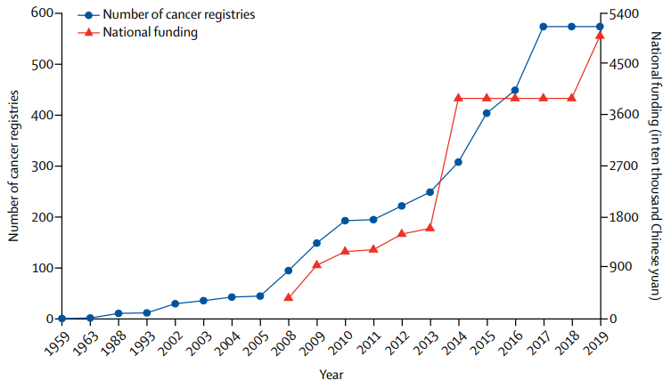
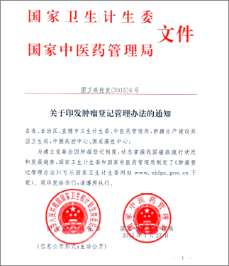

中国肿瘤登记事业发展的里程碑事件
肿瘤登记
历史
在过去的半个世纪里，恶性肿瘤已经成为中国居民最主要的死亡原因，肿瘤发病率和死亡率负担也越来越大。以人群为基础的肿瘤登记在中国已有约60年的历史，而肿瘤登记在我国肿瘤防控中的作用也在不断的扩展和延伸，包括制定和评估国家癌症控制计划以及为科学研究提供基础数据支撑。
从1959年建立全国第一个肿瘤登记处，到2019年，建成574个肿瘤登记处，60多年的发展历程中有哪些重要的里程碑事件呢，我们来了解一下吧！
| 年份 | 中国肿瘤登记里程碑事件 |
|---|---|
| 1959年 | 建立中国第一个肿瘤登记处 |
| 1975年 | 启动全国第一次死因回顾调查项目(1973-1975) |
| 1992年 | 启动全国第二次死因回顾调查项目(1990-1992) |
| 2002年 | 建立国家肿瘤登记处 |
| 2004年 | 发布中国肿瘤预防与控制规划（2004-2010） |
| 2005年 | 启动农村癌症筛查与早诊早治项目 |
| 2006年 | 启动全国第三次死因回顾调查项目（2003-2005） |
| 2007年 | 启动淮河流域癌症筛查项目 |
| 2008年 | 国家肿瘤随访登记项目得到中央财政转移支付资金持续支持 |
| 2012年 | 启动全国城市癌症筛查与早诊早治项目，发布中国慢性病防控规划纲要（2012-2015） |
| 2015年 | 启动中国癌症防治三年行动计划（2015-2017） |
| 2016年 | 颁布健康中国2030规划 |
| 2017年 | 中国慢性病防控中长期规划（2017-2025） |
| 2019年 | 发布健康中国规划（2019-2030） |
1959年，我国在食管癌高发的太行山区进行了食管癌的流行病学调查，我国第一个肿瘤登记处在林州（原林县）建立，成立之初进行单癌症种（食管癌）的登记工作；1963年，上海市建立了中国第一个城市肿瘤登记处，是全国第一个全癌种登记的肿瘤登记处；20世纪70年代，我国进行了第一次全国范围内的肿瘤死因回顾性调查，覆盖了全国96.7%的地区，清楚地描绘了中国癌症死亡模式和分布特征，确定了与高肿瘤死亡率相关的地理区域。随后在这些地区建立了肿瘤登记处，到20世纪90年代，中国的肿瘤登记处已经开始正常运作，主要位于某些肿瘤的高发地区。第二次全国癌症死亡率回顾性调查在1990-1992年进行，结果显示，从1973年开始，中国的癌症死亡负担不断增加。
中国国家肿瘤登记中心(NCCR)于2002年经国家卫生部批准成立，负责管理全国肿瘤登记工作。NCCR每年开展肿瘤登记培训计划，并负责收集、管理和分析全国范围内的肿瘤登记数据。
2005年，中国开展了第三次全国肿瘤死因调查。结果显示，1973年至2005年，肿瘤发病模式发生了变化，胃癌、食管癌和肝癌的负担一直很高，肺癌、女性乳腺癌和结直肠癌的负担呈上升趋势。2008年，中国政府发布了国家肿瘤登记和随访方案，以不断扩大肿瘤登记的覆盖范围，并提供了持续的资金支持。
随后，中国大陆地区的31个省份均建立了肿瘤随访登记工作机制，肿瘤登记工作得到较大的发展，中国肿瘤登记处的数量由2008年的43个增加至2019年的574个。

在这11年期间，每年的肿瘤登记项目经费从369万元人民币(相当于52万美元)增加到5,000万元人民币(700万美元)。一些省份(如上海和湖北)也提供省级资金，支持其所在地区的肿瘤登记工作。

2015年，中国国家卫生和计划生育委员会发布了《中国肿瘤登记管理条例》，这是全国首部针对肿瘤登记的全国性法规。这部法规的颁布为向肿瘤登记处上报数据的机构和个人提供了法律保护，也使人群肿瘤登记信息能够用来进行流行病学研究。除此之外，法规也明确了相关单位应履行的数据上报义务，所有的医院、医疗机构、健康相关机构都有义务向肿瘤登记处报告肿瘤信息，生命统计系统也有义务提供居民死因数据。

2015年以后，为了应对不断增高的癌症负担，中国又颁布了一系列癌症防控的相关规划，比如，癌症防治行动三年规划、健康中国2030、中国慢性病防控中长期规划（2017-2025）、健康中国规划（2019-2030）癌症防治行动方案等。这些癌症防控规划或方案的出台也给我国的肿瘤登记工作提出了新的目标和要求，比如：健全肿瘤登记报告制度、提升肿瘤登记数据质量和促进信息资源共享和利用。
数据来源: Wei W, Zeng H, Zheng R, et al. Cancer registration in china and its role in cancer prevention and control[J]. The Lancet Oncology, 2020, 21(7): e342–e349.